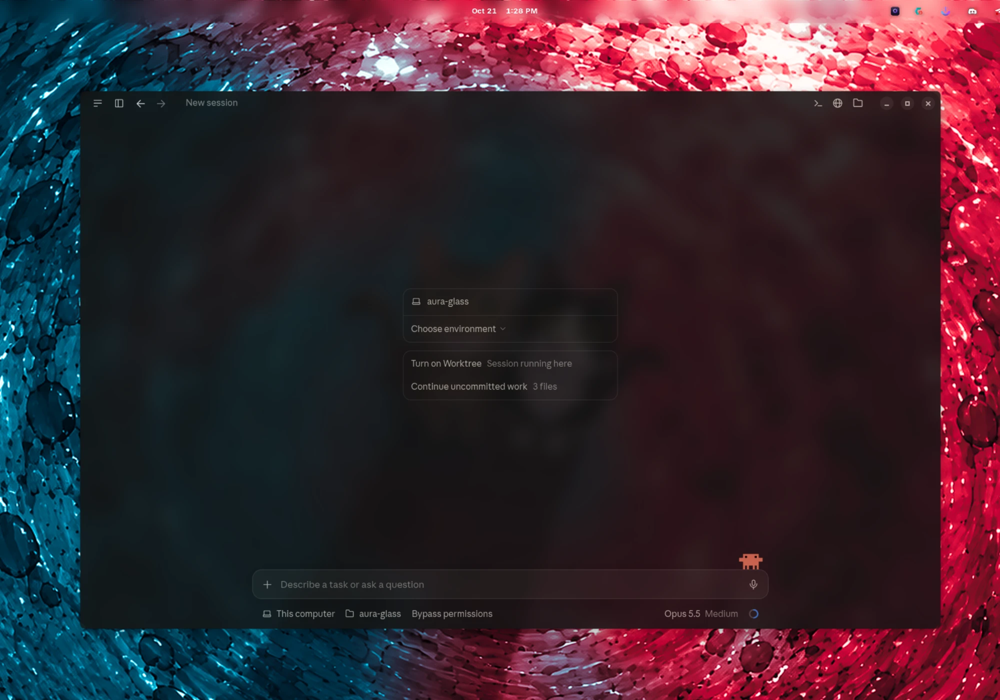
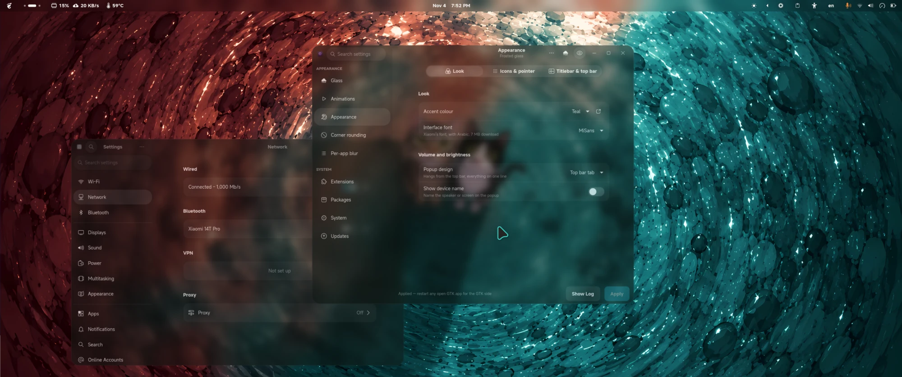

Blur behind everything.
The top bar, overview, dock, menus, Quick Settings, notifications, dialogs and app windows all blur what sits behind them. The blur's corners match the panel painted on top.

One look in every app.
GNOME Shell, GTK4/libadwaita and GTK3 apps share one shape language and your accent colour, with macOS-style window buttons.

Retune it any time.
A settings app for glass, tints, blur, animations, accent, fonts, icons, cursor, corner rounding and per-app blur. No reinstall.

Fast when it has to be.
Performance mode keeps the look with no blur shaders. Adaptive Auto drops blur on battery, under heavy GPU load or in fullscreen games.

Comes back out cleanly.
Everything installs under your home folder. ./uninstall.sh puts it all back.

Install in three commands.
Tested on Arch, CachyOS and EndeavourOS. Fedora, Debian, Ubuntu and openSUSE are supported.
sudo pacman -S --needed git curl python-gobject libadwaita
git clone https://github.com/DevWebeloper/aura-glass.git
cd aura-glass && ./install.shRun the script
Clone the repo and run ./install.sh.
Answer the wizard
Accent, blur, icons, cursor, font.
Log out and back in
Then open Aura Glass Settings to retune.
Questions
What is Aura Glass?
A free, MIT-licensed GNOME theme that turns GNOME Shell 48–51 into a frosted-glass desktop. It themes the shell, GTK4/libadwaita apps and GTK3 apps, adds real blur through a pinned and patched Blur My Shell, and comes with a settings app to retune it.
How do I make GNOME look like macOS?
Install Aura Glass with three commands: git clone https://github.com/DevWebeloper/aura-glass.git, cd aura-glass, ./install.sh. Its theme is built on GNOME-macOS-Tahoe, with frosted blur, macOS-style traffic-light window buttons, and matching icon and pointer packs and fonts, all chosen in the setup wizard.
How do I get blur in GNOME Shell?
Aura Glass installs Blur My Shell and tunes it so the top bar, overview, dock, menus, Quick Settings, notifications, dialogs and app windows all blur what is behind them, with corners that match the theme. A single app can also be blurred from its window menu with Blur This App.
Which GNOME versions and Linux distros does Aura Glass support?
GNOME Shell 48, 49, 50 and 51, on Wayland. Arch, CachyOS and EndeavourOS are the tested path; Fedora, Debian, Ubuntu and openSUSE have dependency mappings and the installer runs there.
Does the blur slow my computer down or drain the battery?
Blur costs GPU time mainly while something behind it keeps redrawing. Performance mode keeps the look without any blur shaders, and Adaptive performance set to Auto drops blur by itself on battery, under heavy GPU load or while a fullscreen game is focused.
Is Aura Glass safe to try, and how do I remove it?
Everything installs under your home folder except two opt-in steps (system packages and the GDM login screen). Running ./uninstall.sh takes it back out.